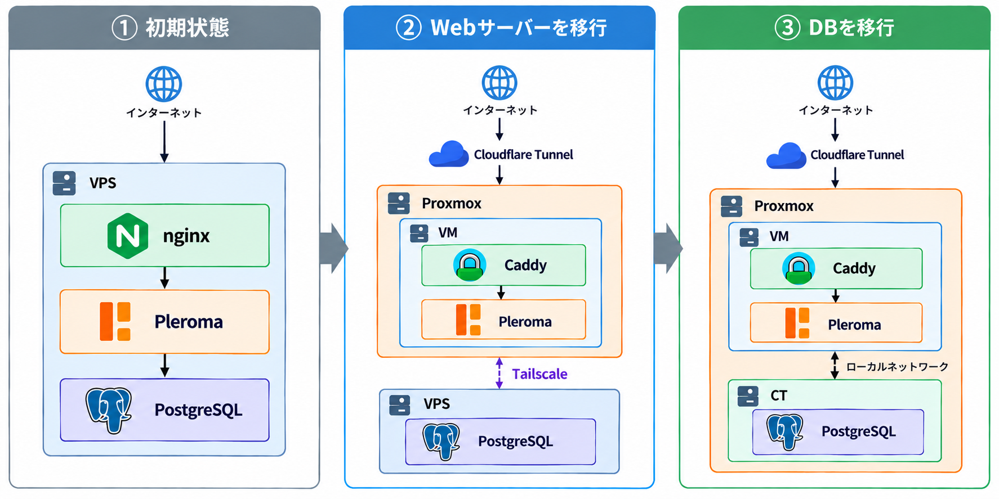
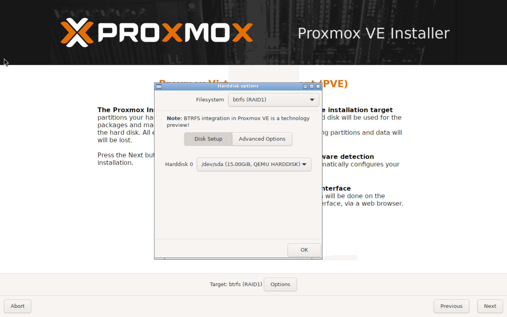
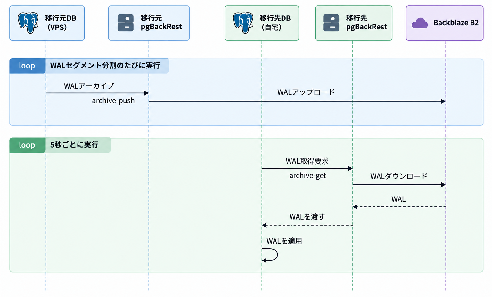

ふらっとハードオフに行ったらメモリ16GBのPCが3万円で落ちてたので買ってしまいました。せっかくなので、Proxmox VEを入れて、Pleromaサーバー「ご隠居」をVPSから自宅に移行してみたので、その学びを書いていきます。
構成 Before / After
もともとご隠居はKAGOYA CLOUD VPSで動いていました。遡ってみると、KAGOYAに移行したのは3年半前ですね、長いこと使っていました。相変わらずケチケチな運用をしているので、メモリ4GBのVPS 1台でDockerとPostgreSQLを運用する形式をとっていました。VPS上にはHTTPをlistenする1つのnginxが動いており、nginxがご隠居を含めたすべてのサービスにリバースプロキシしていました。
新構成では、Proxmoxをテクニカルプレビューであるbtrfsでインストールした上で、Webサーバー用のVMと、DB用のCT(LXC)を用意しました。VMとCTで分かれているのは、同居しているForgejoの構成の都合です。
残念ながら自宅にはグローバルIPv4アドレスがないので、Cloudflare Tunnelでインターネットに公開しています（敗北感）。Cloudflare TunnelがHostの判定、TLS終端をしてくれるようになるので、nginxは廃止しました。ただし、メンテナンス中に503を配信したり、画像の配信をPleromaにやらせないようにする最適化を入れたりする必要があるので、サイドカーとしてCaddyを導入しました。
移行作業は、自宅の回線の様子を見ながら、微妙なら切り戻す判断ができるよう、2回の停止メンテで行いました。
- Webサーバーの移行。メンテナンスモードに入れてリクエストを受け入れない状態にした上で、旧環境へのDNSレコードを削除し、Cloudflare Tunnelの設定を有効化しました。Cloudflareでは、Tunnelで使うサブドメインのDNSレコードは事前に削除しないと中途半端な構成になって壊れます（検証環境で1敗）。旧環境はメンテナンスモードのまま放置し、新環境のメンテナンスモードを解除することで、DNSが浸透したユーザーから復旧するようにしました。DBは旧サーバーに残ったままで、新サーバーのVMから旧サーバーへTailscaleを使って接続しました。
- DBの移行。もともとpgBackRestを使っていたので、pgBackRestのWALアーカイブを使ったレプリケーションを組みました。後で詳しく説明します。

Proxmoxのbtrfsサポート
Proxmoxをデフォルト構成でインストールするとLVMになりますが、触ってみたところ微妙でした。LVM構成でインストールすると、システム用に1/4くらいのパーティションが切られて、残りがVMディスク用になります。マシンが積んでるSSDは256GBで、DBが80GBくらいあることを考えると、だいぶVM用ディスクがカツカツになることが予想されました。btrfsならばディスク全体をフラットに扱えるということで、btrfsにしてみました。

CTのディスクを普通のsubvolumeにする
btrfsでVM・CTを作成すると、ディスクイメージは /var/lib/pve/local-btrfs/images/100/vm-100-disk-0/disk.raw という単一のファイルに保存されます。スナップショットが取れるよう、このディレクトリはsubvolumeになっています。
/var/lib/pve/local-btrfs/images/100/vm-100-disk-0 ← btrfsのsubvolume └ disk.raw ← 指定したディスクサイズのファイル
VMではそれはそうという感じですが、せっかくbtrfsなんだからCTでは普通にsubvolumeを切って、そこにCTのルートディレクトリが置かれて欲しいですよね。
Proxmoxのドキュメントを見てみると、CTを作成するときにディスクサイズを0にすると特別扱いしてくれる、とあります[pct(1)]。残念ながらGUI上からはディスクサイズを0にすることはできません。 pct create コマンドでCTを作成する必要があります。
pct create 100 local-btrfs:vztmpl/TEMPLATE --rootfs local-btrfs:0 ...他のオプション
こんな感じでコマンドから --rootfs local-btrfs:0 オプションをつけてCTを作成すると、ディスクイメージは次のように、普通のディレクトリになります。
/var/lib/pve/local-btrfs/images/100/subvol-100-disk-0.subvol ← btrfsのsubvolume ├ bin ├ boot └ ...
これでdisk.rawという単独ファイルを回避することができ、ディレクトリ単位でCoWを無効化したり、他のCTのイメージとdedupしやすくなったりするはずです。
ただしひとつ罠があります。CT内から見るとルートディレクトリのパーミッションが740になっています。これだとrootユーザー以外はあらゆるディレクトリにアクセスすることができません。実際、ネットワークがupしませんでした。そのため、 --rootfs local-btrfs:0 を指定してCTを起動したら、まずはじめに chmod 755 / を実行して再起動する必要があります。
AnsibleでProxmoxのCTにアクセスする
Ansibleで構成管理をしています。AnsibleはSSHがあればどこでも接続できますが、CTそれぞれすべてにSSHの経路を用意するのもなぁと思っていたところ、ProxmoxのホストへのSSH経路だけ用意すればCTを操作してくれるAnsibleのプラグインがありました。
使い方は簡単で、インベントリファイル（hosts.yml）に次のようにホストを追加するだけです。
foo_group:
hosts:
ct103:
ansible_host: SSH接続できるProxmoxのホスト
ansible_user: root # Proxmoxホスト側のユーザー
ansible_connection: community.proxmox.proxmox_pct_remote
proxmox_vmid: 103 # CT ID
「community.proxmox」はcommunity collectionなので、通常のAnsibleに含まれています。明示的にインストールする場合はansible-galaxyでインストールできます。
このコネクションプラグインは、内部ではProxmoxホストへSSHで接続して pct exec を実行します。したがってAnsibleの操作は、becomeを指定しない限りCT内のrootユーザーで実行されます。
pgBackRestを使ったDB移行
ご隠居サーバーのPostgreSQLのバックアップにはpgBackRestを使っています（以前紹介したpg_rmanから移行しました）。定期的なフルバックアップとWALアーカイブをBackblaze B2にアップロードしており、基本的には障害が起きても失われるデータは数分程度となっています。
さて、DBを移行するにあたって、愚直にバックアップ→リストアを実行すると、回線速度依存ではありますが、2時間くらいダウンタイムが生じる予定でした。そこでふと、WALアーカイブがあるんだから非同期レプリケーションすればダウンタイムを短くできるのでは？と思い調べてみたところ、pgBackRestのrestoreコマンドのオプションに --type=standby というドンピシャの機能がありました。
standbyというオプションが何をしてくれるかというと、まず普通にバックアップからPGDATAディレクトリを復元した後、 restore_command = 'pgbackrest archive-get %f "%p"' と書かれたコンフィグファイルと、 standby.signal というファイルを残します。これらのファイルが残った状態でPostgreSQLを起動すると、5秒おきにrestore_commandに書かれたコマンドを実行して、成功したらそのWALアーカイブを適用するという動作をし続けます。つまりほぼ最新のWALアーカイブを読み込み続けてくれるわけです。

これを利用すれば、停止メンテに入る前にほとんどのデータが新環境のDBにコピーできている状態にできます。停止メンテでは、新環境に最新のWALアーカイブが適用されたことを確認した後 SELECT pg_promote(); を実行することで、リストアを終了します。
移行作業の実際の手順書は、こんな感じでした。
- 定期バックアップを停止する
- メンテナンスモードに入れる
- アプリコンテナを停止する
- 移行元DBで
SELECT pg_current_wal_lsn();でLSNを確認 →56B/C0EE000（WALアーカイブの最後） - 移行元DBで
SELECT pg_switch_wal();を実行 →56B/C0F8B80（WALアーカイブの最初） - 移行先DBで
SELECT pg_last_wal_replay_lsn();し、移行元のLSN以上であることを確認 →56B/E000000 - 移行元DBを停止
sudo pg_ctlcluster stop 18 main - 移行先DBで
SELECT pg_promote(); - composeの環境変数を変更
- アプリコンテナを起動して動作確認
おわり
そんなこんなで30分程度の停止メンテ2回で、無事ご隠居サーバーを自宅に移行することができました。初めてPostgreSQLでちょっとしたレプリケーションをやってみましたが、思ったより簡単でした。pgBackRest便利ですね。
ところで、この記事を書いてる間にメインPCのSSDがお亡くなりになって、非常に困っています。つらい。